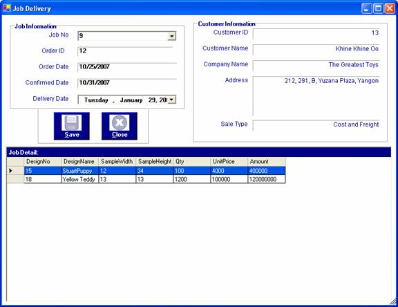

How to process Job Delivery
After you have successfully logged in to the system, you can enter the required data.
After you confirim the particular job, the job delivery date has to be filled.
To store the job delivery date, firstly, open the "Job Delivery " form from the Process Menu Bar. When it is come out, choose the Job No to restrict the delivery date. After the requried job is chosen, its relevant information is appeared and job delivery date need to be selected.

After constraining the job delivery date, click "Save" button or "Alt+S" to store data. The following message will be appeared.
Saving the delivery date for jobs process can be done as many time as you like.
Finally, to close the Job Delivery form, Press "Close" button or "Alt+C".